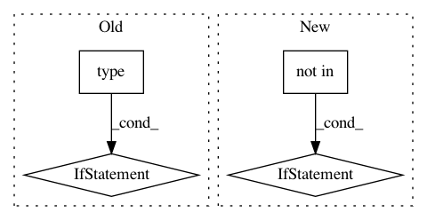

30eb3767e95cfce4e8ef68e23de7298ea5345bd7,scipy/stats/_binned_statistic.py,,binned_statistic_dd,#Any#Any#Any#Any#Any#,199
Before Change
.. versionadded:: 0.11.0
if type(statistic) == str:
if statistic not in ["mean", "median", "count", "sum", "std"]:
raise ValueError("unrecognized statistic "%s"" % statistic)
elif callable(statistic):
pass
else:
raise ValueError("statistic not understood")
// This code is based on np.histogramdd
try:
// Sample is an ND-array.
N, D = sample.shape
except (AttributeError, ValueError):
After Change
known_stats = ["mean", "median", "count", "sum", "std"]
if not callable(statistic) and statistic not in known_stats:
raise ValueError("invalid statistic %r" % (statistic,))
// This code is based on np.histogramdd
try:
// Sample is an ND-array.
N, D = sample.shape
except (AttributeError, ValueError):
In pattern: SUPERPATTERN
Frequency: 3
Non-data size: 4
Instances
Project Name: scipy/scipy
Commit Name: 30eb3767e95cfce4e8ef68e23de7298ea5345bd7
Time: 2014-10-06
Author: warren.weckesser@gmail.com
File Name: scipy/stats/_binned_statistic.py
Class Name:
Method Name: binned_statistic_dd
Project Name: hachmannlab/chemml
Commit Name: 1672b5a9a47b081aa3e61c9f2ca76fae26ed8730
Time: 2017-11-12
Author: mojtabah@buffalo.edu
File Name: cheml/wrappers/cheml_cml/cheml_wrapper.py
Class Name: RDKitFingerprint
Method Name: fit
Project Name: Rostlab/nalaf
Commit Name: 801fb1ff303c539ed90b91fc34261a5787c768c2
Time: 2015-07-06
Author: aleksandar.bojchevski@gmail.com
File Name: nala/learning/crfsuite.py
Class Name: CRFSuite
Method Name: create_input_file